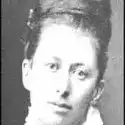

Elizabeth Southerden Thompson Butler (née le 3 novembre 1846 à Lausanne, et morte le 2 octobre 1933 dans le Comté de Meath) est une peintre britannique.
Elle est l'une des rares femmes peintres à connaitre la célébrité dans son style, les peintures d'histoire, et en particulier les scènes de bataille, alors même que ce type de production s'essouffle.
Elle est l'une des rares femmes peintres à connaitre la célébrité dans son style, les peintures d'histoire, et en particulier les scènes de bataille, alors même que ce type de production s'essouffle.
Certaines de ses plus célèbres scènes militaires sont inspirées des Guerres napoléoniennes, mais elle a aussi travaillé autour de la plupart des grands conflits de la fin du XIXème, et peint plusieurs œuvres représentant la Première Guerre mondiale.
Elle est l'épouse de l'officier et écrivain William Francis Butler.